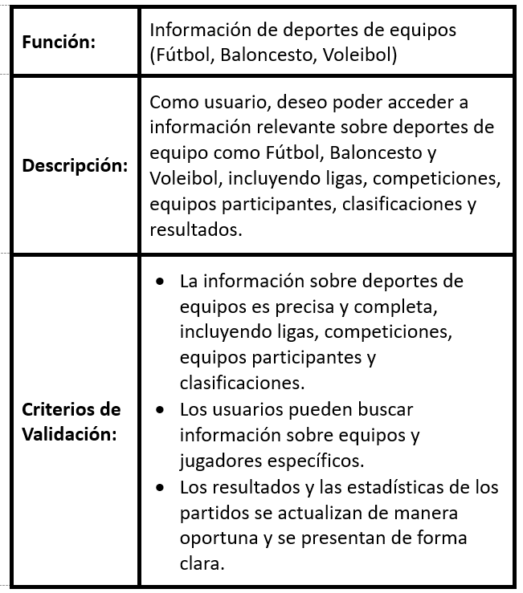
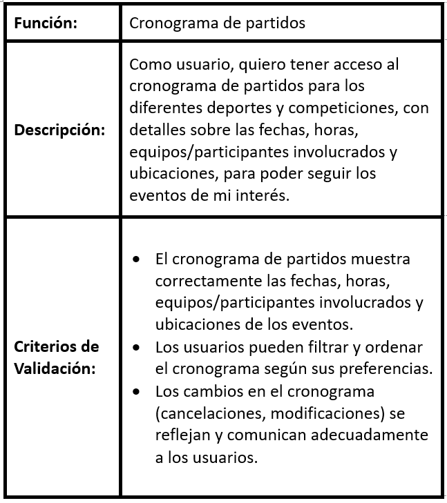
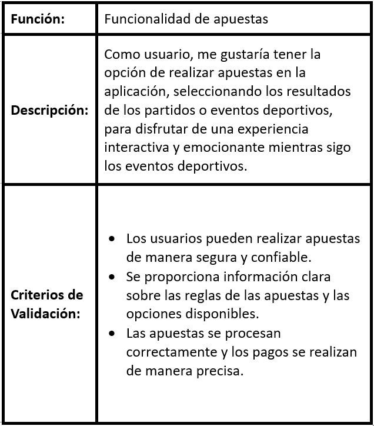
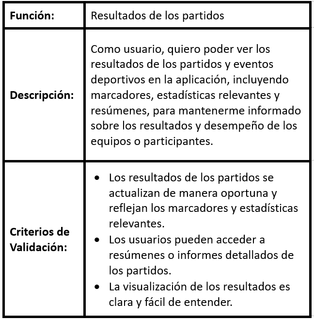
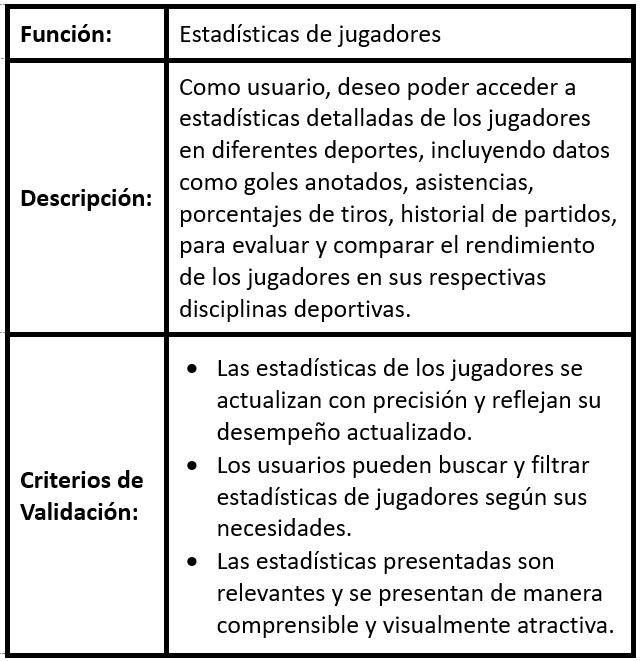
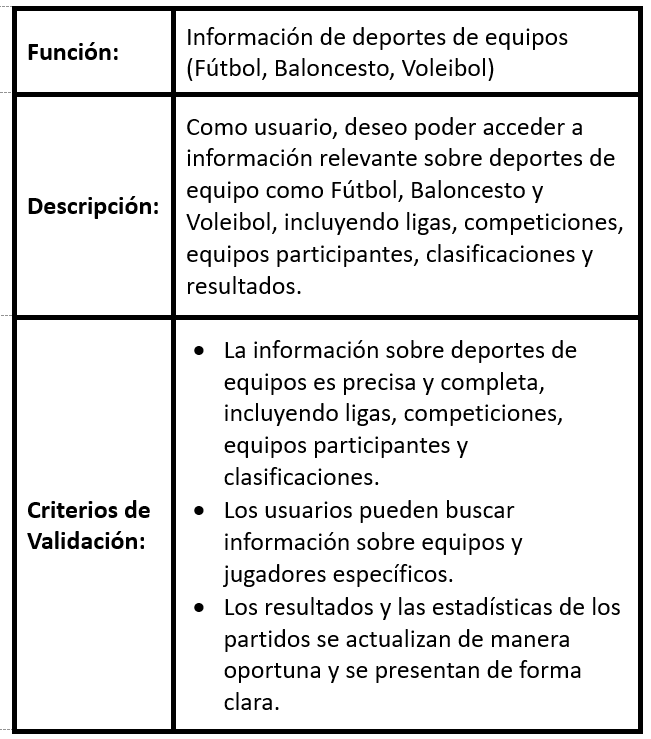
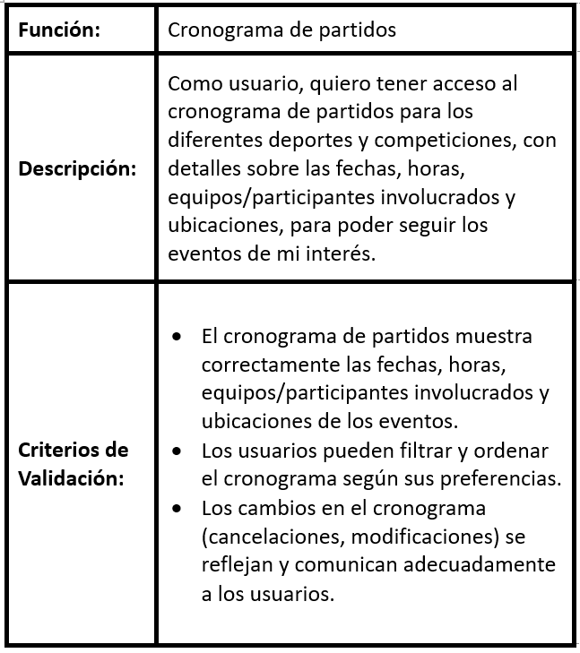
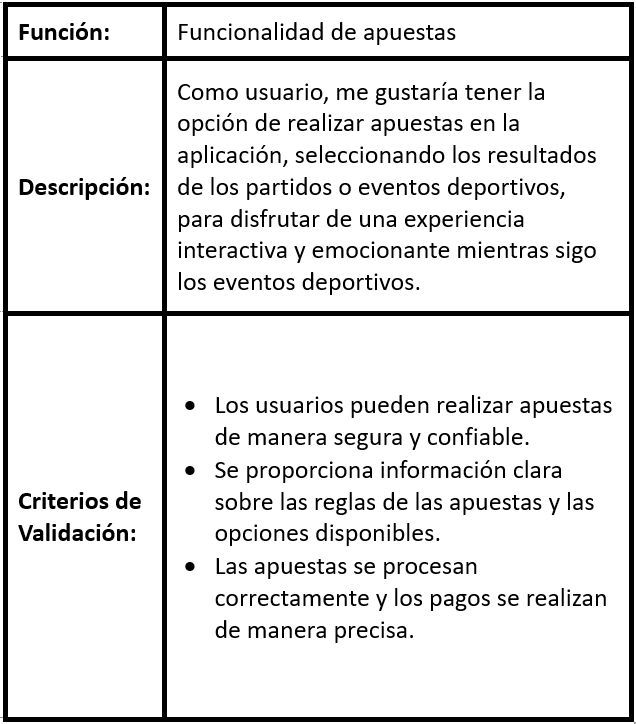
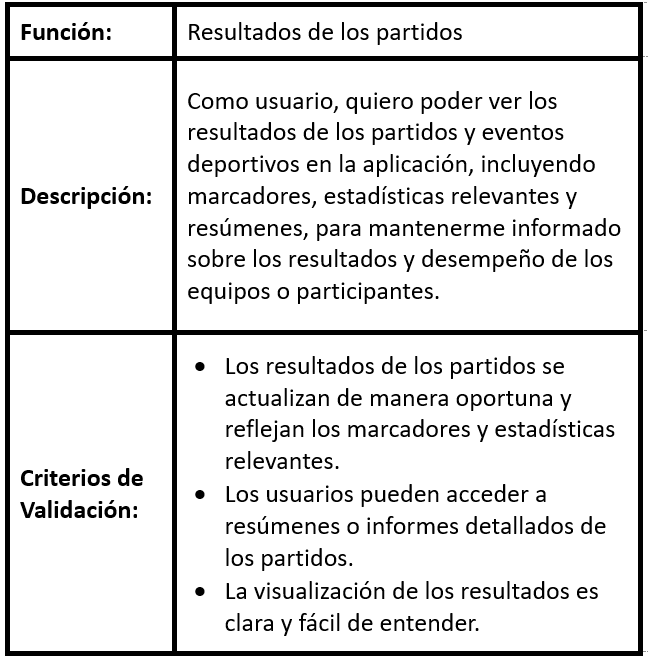
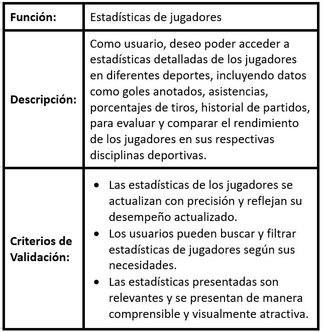

Informacion Basica:
Desarrollo de una aplicacion para el seguimiento de competencias deportivas, para lograr la facilitacion del acceso de los usuarios a una aplicacion confiable y completa, con distintas funcionalidades diseñadas en beneficio de la calidad de experiencia de expertos y aficionados en el mundo deportivo.
Historias de Usuario:
 









Diagrama de Clases UML:
Enlace al Diagrama
Repositorio en Github:
Autores:
● Stiven P. Jimenez C.
● David A. Guaman C.